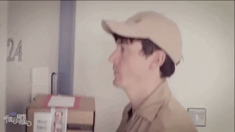
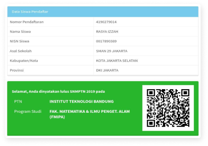

Assalmualaikum suratttt !!!
From: Imam
To: Rasya Izzah
Subject: Ucapan Dan Harapan
Date: Wed, 08 September 2021
Assalamualaikum Ras.
Gimana kabar lu nih?, kayanya hectic banget semester 5 HAHAHA. Semester 5 ama 6 emang puncak jadi mahasiswa si, makanya ada sebutan "Tuhan Bersama Mahasiswa Semester 5". Walaupun hectic moga tetep sehat-sehat aja ya dan moga keluarga lu juga sehat-sehat terus, AMINNN.
Oya btw congrats buat amanahnya sebagai President di ACS ITB, semoga makin growth organisasinya pas dipimpin lu ya AMINNN.
Gimana udah lebih dari Tiktok yang lu kasih belom HAHAHA? moga aja lebih lah ya. Excel doang mah anak smp bisa wkwkwk. engga deng canda.
Selamat Ulang Tahun ya Ras yang ke-20. Moga selalu dilimpahkan rahmat dan barokah disetiap aktivitasnya oleh Allah SWT, semoga sekeluarga selalu diberikan kesehatan oleh Allah SWT, semoga dilancarin terus rejekinya oleh Allah SWT, semoga jadi anak bae-bae dihadapan orang tua, semoga makin rajin ibadahnya, dan semoga dipermudah segala urusannya oleh Allah SWT.
AMINNN ... AMINNN ... YA ROBBAL ALAMIN ...
Klo kata orang-orang umur 20 tahun itu masa transisi dimana kita minta duit jajan ke ortu gk enak, tapi masalahnya butuh. Terus umur ke-20 juga masa-masa dimana temen-temen kita makin menipis dan fokus masing-masing ke tujuan mereka. Terus dimana masa-masa kita mikirin “what am I doing with my life?”. But that’s okay, itu normal and maybe hampir semua orang gitu wkwk, quarter life crisis lah kalo kata orang-orang. Malah sambat gua wkwk, tapi yang jadi intinya semoga lu bisa ngelewatin dan nikmatin itu semua dengan kepala dingin dan pikiran yang positif, like you said to me hehe.
Segini aja kayanya, nanti kepanjangan jadinya cerpen. Sekali lagi HBD Ras yang ke-20 dan gua mewakili orang2 berumur 20-29 mengucapkan welcome in 20 something year old 🙌.
Wassalamuaalaikum.
Regards, Imam.
Gimana kabar lu nih?, kayanya hectic banget semester 5 HAHAHA. Semester 5 ama 6 emang puncak jadi mahasiswa si, makanya ada sebutan "Tuhan Bersama Mahasiswa Semester 5". Walaupun hectic moga tetep sehat-sehat aja ya dan moga keluarga lu juga sehat-sehat terus, AMINNN.
Oya btw congrats buat amanahnya sebagai President di ACS ITB, semoga makin growth organisasinya pas dipimpin lu ya AMINNN.
Gimana udah lebih dari Tiktok yang lu kasih belom HAHAHA? moga aja lebih lah ya. Excel doang mah anak smp bisa wkwkwk. engga deng canda.
Selamat Ulang Tahun ya Ras yang ke-20. Moga selalu dilimpahkan rahmat dan barokah disetiap aktivitasnya oleh Allah SWT, semoga sekeluarga selalu diberikan kesehatan oleh Allah SWT, semoga dilancarin terus rejekinya oleh Allah SWT, semoga jadi anak bae-bae dihadapan orang tua, semoga makin rajin ibadahnya, dan semoga dipermudah segala urusannya oleh Allah SWT.
AMINNN ... AMINNN ... YA ROBBAL ALAMIN ...
Klo kata orang-orang umur 20 tahun itu masa transisi dimana kita minta duit jajan ke ortu gk enak, tapi masalahnya butuh. Terus umur ke-20 juga masa-masa dimana temen-temen kita makin menipis dan fokus masing-masing ke tujuan mereka. Terus dimana masa-masa kita mikirin “what am I doing with my life?”. But that’s okay, itu normal and maybe hampir semua orang gitu wkwk, quarter life crisis lah kalo kata orang-orang. Malah sambat gua wkwk, tapi yang jadi intinya semoga lu bisa ngelewatin dan nikmatin itu semua dengan kepala dingin dan pikiran yang positif, like you said to me hehe.
Segini aja kayanya, nanti kepanjangan jadinya cerpen. Sekali lagi HBD Ras yang ke-20 dan gua mewakili orang2 berumur 20-29 mengucapkan welcome in 20 something year old 🙌.
Wassalamuaalaikum.
Regards, Imam.

Time to open your birthday gifts!
Gua ada hadiah kecil-kecilan nih, moga aja lu suka ye wkwkwk.
